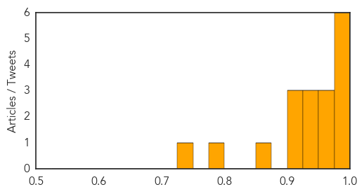

MERS
30-Day Web Trend
2 alerts, 0 warnings

30-Day Twitter Trend
1 alerts, 0 warnings

Article Locations


Article Confidences
Top Articles:
- 0.994
- Nurse, family members set to go home after testing negative for Mers-CoV
- 0.993
- PNP readies hospital isolation rooms for possible Ebola victims–spokesman
- 0.992
- Nurse turns out corona-virus free
- 0.991
- Nurse from KSA didn’t have MERS
- 0.988
- Pinay nurse didn’t have MERS
- 0.987
- Filipino nurse thought to have MERS virus did not
- 0.968
- Filipina nurse thought to have Mers tests negative
- 0.964
- Filipina nurse thought to have Mers tests negative
- 0.955
- PH nurse cleared of MERS-CoV
- 0.944
- Phl still MERS free as nurse tests negative
- 0.938
- (UPDATE) Nurse tested negative for MERS-CoV, says gov't
- 0.936
- Filipina nurse tested negative for MERS-CoV, says Philippine gov't
- 0.916
- Nurse quarantined in Davao for MERS-CoV is released
- 0.915
- 6,570 Moro pilgrims leave for Mecca amid deadly MERS-CoV, Ebola threats
- 0.911
- Filipina nurse from Saudi tests negative for MERS
- 0.851
- Filipina nurse from Saudi Arabia negative for MERS-CoV
- 0.785
- Filipina nurse negative for Mers
- 0.731
- Body of Filipino MERS victim buried
Top Tweets:
-
No tweets found for Sep 05, 2014
Ebola
30-Day Web Trend
0 alerts, 18 warnings

30-Day Twitter Trend
Article Locations

Article Confidences
Top Articles:
- 1.000
- Woman admitted to Jerusalem hospital possibly Israel's first Ebola case
- 1.000
- U.S. Doctor Will Be Treated Without Experimental Drug
- 1.000
- How Ebola is stealing attention from illnesses that kill more people
- 1.000
- U.S. doctor will be treated without experimental drug
- 1.000
- U.S. doctor will be treated without experimental drug
- 1.000
- EU pledges 140 mln euros in Ebola aid as W.Africa toll tops 2,100
- 1.000
- World's worst Ebola outbreak tests global response - World
- 1.000
- What are the 10 possible cures and vaccines for Ebola?
- 1.000
- Blood Transfusions from Survivors Best Way to Fight Ebola
- 1.000
- CHRONOLOGY-World's worst Ebola outbreak tests global response
- 1.000
- WHO mulls untested Ebola drugs
- 1.000
- WHO eyes Ebola vaccine by November
- 1.000
- WHO selects ten vaccines against Ebola
- 1.000
- SADC holds Ebola meeting in Zimbabwe
- 1.000
- Third U.S. aid worker infected with Ebola arrives in Nebraska
- 1.000
- U.S. doctor will be treated without experimental drug
- 1.000
- WHO eyes Ebola vaccine by November as death toll passes 2,000
- 1.000
- Ebola Virus May Be Headed To The United States This Month, Experts Warn
- 1.000
- Ebola response must be based on 'scientific evidence, not on fear,' urge top UN officials
- 1.000
- Ebola virus: 1,900 dead as worst ever outbreak spreads rapidly
- 1.000
- Nigerian tourist quarantined in Jerusalem over suspected Ebola
- 1.000
- How the Ebola outbreak compares to other killers
- 1.000
- Doctor Predicts Ebola Outbreak Will Continue For More Than A Year
- 1.000
- CDC, WHO, UN, Obama Address Ebola Crisis; Human Vaccine Trials Underway
- 1.000
- Vaccine for Ebola could be ready by November
- 1.000
- Ebola: timeline of a ruthless killer
- 1.000
- Timeline: World's worst Ebola outbreak tests global response
- 1.000
- Ebola patient escapes quarantine, runs through Liberian market: Disturbing video
- 1.000
- Can Ebola be cured by using the BLOOD of survivors?
- 1.000
- The most from the coast
- 1.000
- In face of Ebola, U. urges caution
- 1.000
- On Ebola ward, Liberian nurses must improvise gear
- 1.000
- Ebola Experts Discuss Possible Cures Vaccines
- 1.000
- Sierra Leone declares Ebola lockdown
- 1.000
- Ebola: How bad can it get?
- 1.000
- The Barbados Advocate
- 1.000
- Alarming about Ebola
- 1.000
- Travel restrictions could worsen Ebola crisis: experts
- 1.000
- 1,900 die of Ebola as WHO seeks $600m to tackle outbreak
- 1.000
- A Few Ebola Cases Likely In U.S., Air Traffic Analysis Predicts
- 1.000
- UPDATE 2-EU pledges 140 mln euros in Ebola aid as W.Africa toll tops 2,100
- 1.000
- EU pledges 140 mln euros in Ebola aid as W.Africa toll tops 2,100
- 1.000
- Third U.S. Aid Worker Infected With Ebola Arrives in Nebraska
- 1.000
- Why We Still Don't Have an Ebola Vaccine
- 1.000
- SADC taking precautionary measures to halt Ebola
- 1.000
- Health experts to meet
- 1.000
- Third U.S. Aid Worker Infected With Ebola Arrives in Nebraska
- 1.000
- CHRONOLOGY-World's worst Ebola outbreak tests global response
- 0.999
- Ban issues 'international rescue call' to halt Ebola epidemic
- 0.999
- – WHO: Halting Ebola Will Take Six Months, $600 Million
Showing top 50 articles...
Top Tweets:
- 0.642
- Minimal risk of Ebola spreading in EU if Ebola cases recognised & precautions by healthcare providers taken http://t.co/DePwFIvqJd
- 0.591
- Indeed! My point is burden of disease is not equal to the threat/risk of disease. & attention 4 Ebola= good for global health
- 0.580
- RT: New: Ebola Virus Disease Screening for Hospitals. http://t.co/VstPOyaEcN EVD
- 0.571
- MT As of 31Aug 2014 3685 prob/conf/susp Ebola cases & 1841 deaths reported in Guinea Liberia SierraLeone http://t.co/IwMqQeW24K
- 0.520
- .@nprGlobalHealth CDC has infection control guidance for US hospitals for treatment of suspected Ebola patients http://t.co/Qx8NUE07ow